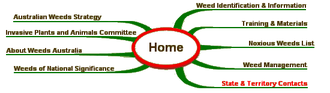

|
Click the appropriate State or Territory below for contact information. SITE MAP 
Australian Weeds Strategy | Weed Identification | Australian Weeds Committee |
|
Site Content and Operation: John Thorp Australia Telephone: (03) 6344 9657 |
Site Design - Computer Support Tasmania | |
| © Australian Weeds Committee |